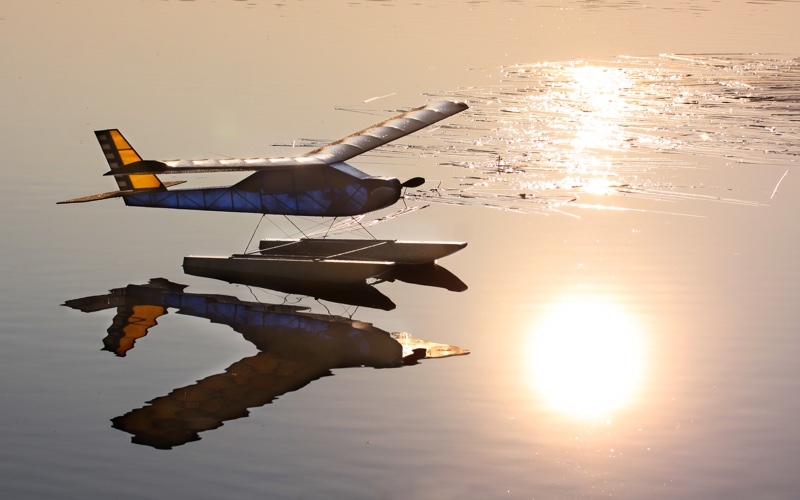

| WING | ||
| 2 | 3/16 sq x 23 | Leading Edges |
| 2 | 1/8 x 1/4 x 23 | Trailing Edges |
| 2 | 1/8 x 3/4 x 25 | Main Spars |
| 2 | 1/8 x 1/2 x 25 | Rear Spars |
| 1 | 1/8 x 3/4 x 11 | Main Spar Joiner |
| 1 | 1/8 x 1/2 x 11 | Rear Spar Joiner |
| 1 | 1/16 x 3 x 18 | Center Section Sheeting |
| 2 | 1/8 x 2 dowel | Wing Hold Down |
| 1 | 1/16 Music Wire | Wing Latch * |
| 1 | Ball Point Pen Spring | Wing Latch |
| 1 | 1/16 Wheel Collar | Wing Latch |
Cut LE & TE center sections from scrap. You will need about 3 inches of each. With care, the spars and joiners can be cut from a single 3x36 sheet of firm, straight 1/8 balsa. Measure lengths carefully from plans before committing. TE can be cut from same sheet stock as fuselage sticks. | ||
| FUSELAGE & TAIL SURFACES | ||
| 14 | 1/8 x 1/8 | Fuselage and Tail Framing |
| 2 | 1/8 x 1/4 | Fin, Rudder, Stab & Elevator Spars (straight!) |
| 1 | 1/8 x 1 x 6 | Stab & Elevator Center Sections |
| 1 | 1/16 x 3 | Fuselage Sheeting (light!) |
I recommend stripping sticks from sheet stock for consistency and cost savings. A single 3x36 sheet will nominally yield 24 1/8 square sticks if using a razor type stripper with no kerf. The extra stock allows you to be picky, or replenish your supplies for the next model. Using a table saw may waste up to half of the stock as dust, so plan accordingly. | ||
| LANDING GEAR, WHEELS | ||
| 1 | 1/16 Music Wire | Main Landing Gear Strut * |
| 4 | 1/16 Wheel Collars | See note below ** |
| 2 | 2 inch Light Wheels | Larger wheels run more smoothly on rough ground, but weigh more. |
| 1 | Button Thread | Lacing to secure gear strut to former. |
| FLOATS | ||
| 4 | 1/16 x 3 x 36 sheet | Float sides and decking. Bulkheads included in short kit. |
| 2 | 1/4 x 1/2 x 1 1/2 | Float Tips. Can be laminated from 1/8 scrap. |
| 2 | 1/8 x 1/4 x 9 5/8 | Top Rails, cut from Spruce or Pine. |
| 2 | 1/8 x 1/4 x 10 | Spreader Bars, cut from Spruce or Pine. These are shown on plans as 9 5/8 long, see below. |
| 1 | 1/8 x 4 dowel | Rear Float Strut Anchor |
| 1 | 1/16 Music Wire | Rear Float Strut * |
| 8 | 1/16 Wheel Collars | See note below ** |
I recommend extending the spreader bars to 13 1/4. Doing so will widen the float stance from 8 3/8 to 12 inches center to center, and increase stability on the water. Spreading the struts will also lower the fuselage about 5/8 of an inch. I lengthened my struts about an inch between the fuselage and floats to maintain the original thrust line height above the float decks. I have logged about 7 hours with the Kitten during the 2019 flying season, and no longer feel that lengthening the struts to accommodate the extra spacing is necessary.
* - Both landing gear struts and the wing attach pin can be cut from a single piece of 1/16 music wire. I recommend buying two, just in case. ** - Soldering small washers to the axles can replace the inner wheel collars. | ||
| GUIDANCE | ||
| 2 | Hitec HS-55 servos or similar | |
| 1 | Receiver, light weight | |
| 1 | Dubro #852 | Micro Pushrod System, 30 in. |
The Dubro pushrod kit is a simple solution, but not required. The plans show pushrods made from 1/8 sq balsa & wire ends. My Electric Kitten has button thread runs for pull-pull control on the rudder. | ||
| POWER RECOMMENDATIONS | ||
| AXI 2208/34, APC 9x6 Slow Fly prop, 18-25 amp ESC, 2S 700-1200mAh LiPo | ||
| Cobra 2208/34, APC 9x6 Slow Fly prop, 18-25 amp ESC, 2S 700-1200mAh LiPo | ||
| Himax 2812-0850, APC 8x6E prop, 18-25 amp ESC, 3S 700-1200mAh LiPo | ||
|
There is no need for extra power, 100 watts is more than enough. Our AXI powered Kitten easily lifts off glassy water at less than half stick, as does Carl's Himax powered version. We know of two Electric Kittens that still fly regularly on wheels and floats near Denver, with well-used Speed 400 brushed motors. Yes, that's roughly just 50 watts of power, at nearly 5000 feet ASL.
Similarly, please don't weigh your model down with larger batteries. The recommended combinations have logged flight times in excess of 30 minutes. Do you really need more? | ||

Return to the Kitten building notes, or the Flying Models Plans site.
Copyright 2019-2022, Thayer Syme. All rights reserved